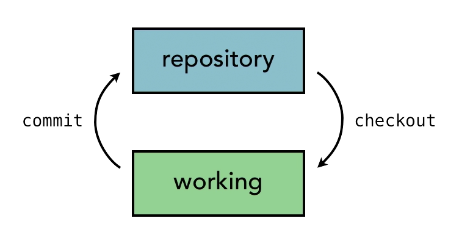
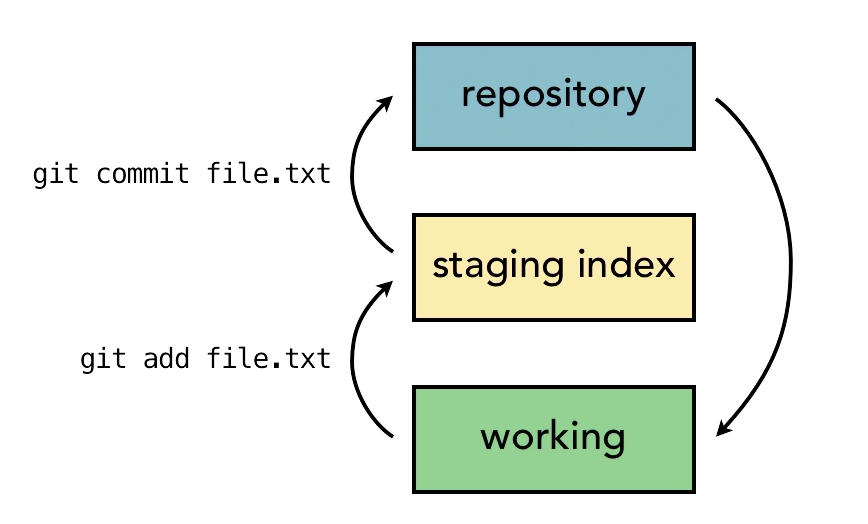

|
|
initailize git
git init 初始化一个仓库
|
|
.git文件夹里的文件不要动，除了config文件
- make changes
- add the changes
- commit changes to the repository with a message
|
|
writing commit messages
|
|
Git concepts and architecture
two-tree architecture

当多人编辑同一文件时，会有问题
three-tree architecure

git add 只是加入到staging index,git commit才是永久的存入repository里,并且会有commit message。
git workflow
1.Git generate a checksum for each change set
- checksum algorthms convert data into a simple number
- same data always equals same checksum
2.data integrity is fundamental
- changing data would change checksum
3.Git uses SHA-1 hash algorithm to create checksums
- 40-character hexadecimal string(0-9,a-f)
using the SHA-1 value to referr to commits
The head pointer
HEAD always points to “tips” of current branch in repository.
HEAD在哪里呢？
|
|
Add Files to Repository
|
|
git status会告诉working directory ,stagging index 和 repository的区别
Edit files
view change wich diff
|
|
view
|
|
deleting files
|
|
moving and renaming files
手动改名git status时不会显示rename,会提示原文件被删除，而改名的文件未add。当我们git add后再进行git status，git会根据改名前后文件的内容来判断是否为rename,如果改名前后文件内容超多50%是一样的，则判定为rename,否则为新文件。如果需要改名或则删除的文件较多，建议先操作好后再用git；如果血药改名活删除的文件少，可以直接用git操作。
在git看来，mv和改名是一个操作
less page
“f” forward
“b” backward
toggle fold long lines
minus sign(-)+shift+s+return
git diff –color-word contact.html
|
|
高效但也有风险：
- 该命令会把working directory下的所有文件都commit,包括那些我们可能不想commit的文件。
- 对于那些untracked和deleted的文件该命令不会包含。
renaming
|
|
undo changes
撤销working directory里的更改，这里以index.html文件为例
|
|
checkout 后面不要加入加入目录名，以免和后面branch名冲突。最好的做法是用“–” 表示在当前分恢复working directory里面的index.html文件。
撤销stagging里的更改
当我们修改了文件，add但是没有commit，这时我们的文件处于stage，我们可以使用以下命令撤销掉它刚刚的修改，但是保留working directory里的内容。
|
|
The HEAD pointer always points to the last commit of the tip of the current branch.